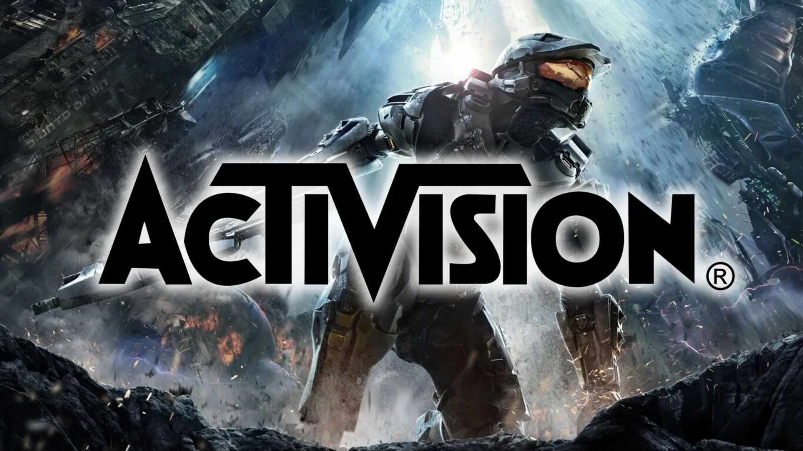

Luiso · 23 de septiembre de 2026 · 3 min de lectura
Microsoft anunció una nueva etapa de su reestructuración interna de Xbox, con 268 puestos de trabajo eliminados y cambios significativos en la organización de sus estudios. La compañía también confirmó que Activision asumirá el desarrollo del próximo juego principal de Halo.
El anuncio fue comunicado por Matt Booty, director de contenido de Xbox, a través de un mensaje dirigido a los empleados. Según la empresa, las medidas adoptadas desde julio, incluidos los procesos de separación de algunos estudios, representan aproximadamente tres cuartas partes de la reestructuración previamente anunciada.
Uno de los cambios más importantes afecta a la franquicia Halo. Activision ampliará sus responsabilidades para incluir a World’s Edge y Rare, además de encargarse del desarrollo del próximo título principal de la saga.
Para ello, se formará un equipo específico dentro de Activision, separado del grupo que trabaja en Call of Duty. Mientras tanto, Halo Studios conservará un equipo reducido que continuará dando soporte a la comunidad y a los juegos que ya se encuentran disponibles.
La decisión no significa que Halo Studios desaparezca inmediatamente, pero sí supone una modificación sustancial en el control y la organización de una de las franquicias históricas de Xbox.
La reorganización también modifica la estructura de otros estudios internos.
Bethesda ampliará sus responsabilidades para incorporar a Obsidian Entertainment, que continuará trabajando en sus proyectos actuales, incluido Grounded, además del nuevo juego de Fallout desarrollado en colaboración con Bethesda Game Studios.
Por otro lado, Playground Games y Turn 10 Studios se unirán en un único estudio centrado en las franquicias Forza y Fable. Ambos equipos ya habían colaborado durante más de una década, y ahora sus operaciones pasarán a integrarse formalmente.
Asimismo, King asumirá la responsabilidad de Microsoft Casual Games, unificando las divisiones dedicadas a los títulos casuales y a sus operaciones en vivo.
Uno de los puntos más delicados del anuncio está relacionado con Ninja Theory. Microsoft confirmó que dos acuerdos diferentes para vender el estudio fracasaron. Como consecuencia, la compañía iniciará un proceso de consulta con los empleados sobre un posible cierre, aunque aseguró que continuará explorando otras alternativas.
La situación de Arkane también permanece abierta. Las conversaciones relacionadas con su futuro seguirán desarrollándose hasta finales de año, según el comunicado de Xbox.
En paralelo, Compulsion Games y Double Fine ya recuperaron su independencia durante agosto, con sus propiedades intelectuales, catálogos y financiación operativa. Undead Labs también completó un proceso similar y lanzará State of Decay 3 en Game Pass desde el primer día bajo un nuevo editor.
Los nuevos cambios se suman a los recortes anunciados previamente por Microsoft. La compañía había informado de un plan para reducir aproximadamente 3.200 puestos de trabajo durante el año fiscal 2027, después de una primera etapa que afectó a distintos estudios y divisiones de Xbox.
El anuncio refleja un intento de concentrar la gestión de sus franquicias en menos unidades empresariales. Sin embargo, también implica la reducción de equipos, la modificación de responsabilidades históricas y la incertidumbre sobre la continuidad de algunos estudios.